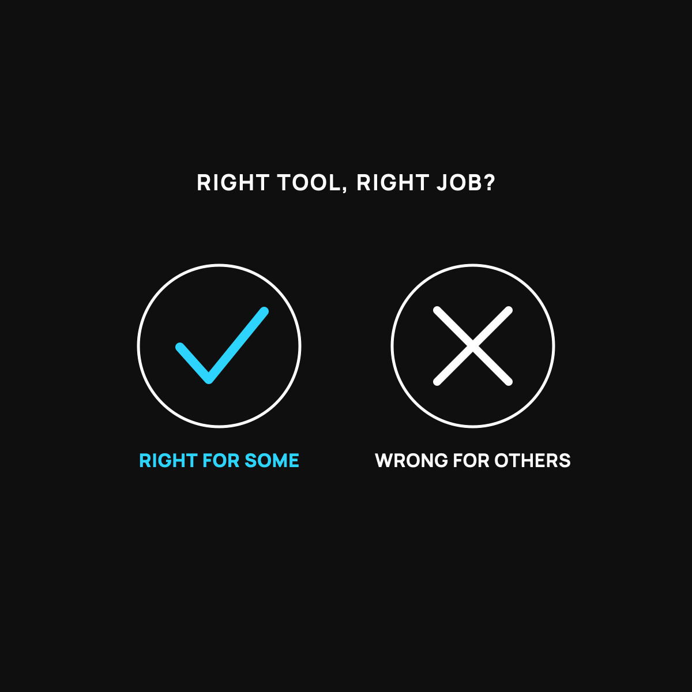

Who Health Sharing Is Wrong For
A great tool for the right job. Here's when it's the wrong one.
Health sharing is the wrong tool if you have an ongoing condition that needs regular expensive care, if you need a signed, enforceable guarantee that bills get paid, if you take a pricey brand-name drug every month, or if you can't keep $500 set aside for an event. If that's you, a regular plan is the right tool, no shame in it.

I write a fair bit about health sharing as a real option, so let me do the opposite today. This is who health sharing is wrong for. Because the honest truth is it's a great fit for some people and a bad fit for others, and pretending otherwise would make me exactly the kind of salesman this brand refuses to be.
Right tool, wrong job
A motorcycle is a wonderful thing. Cheap on gas, fun, easy to park. But if your job is hauling lumber every day, a motorcycle is the wrong tool, no matter how great it is. Nothing's broken about the bike. It's just not built for that load.
Health sharing is the same. It's a genuinely good tool for the right job. But for some people and some situations, it's the wrong tool, and here's how to tell if that's you.
It's wrong for you if you have ongoing medical needs
Health sharing is built for the big surprise: the broken leg, the unexpected event. It is usually not built for the steady, known, ongoing stuff. Most sharing communities have rules about pre-existing conditions, and they often won't cover care for a condition you already have when you join, at least not right away.
So if you or someone in your family has an ongoing condition that needs regular care and medication, health sharing may leave the exact thing you need most out in the cold. That's the lumber the motorcycle can't haul.
It's wrong for you if you need a legal guarantee
This is the big one. Health sharing is not insurance. There is no contract legally forcing the group to pay your bill. In practice these communities do pay, and they have every reason to, but if what lets you sleep at night is a signed, enforceable guarantee, health sharing will not give you that peace. I laid out that exact trade-off here.
Some people are fine trading the guarantee for a much lower cost. Some people are not. Neither is wrong. You just have to know which one you are.
It's wrong for you if the rules don't fit your life
Sharing communities often come with expectations, sometimes lifestyle ones, and things like waiting periods before certain costs are shared. None of that is hidden, but you have to actually read it and make sure it fits how you live. If it doesn't, that's a sign to walk away, not to talk yourself into it.
Who it's actually right for
So who is the motorcycle right for? Generally, healthier people and families who don't have big ongoing medical needs, who mostly want protection from the large surprise bill, who want a much lower monthly cost, and who are genuinely comfortable with a strong commitment instead of a legal contract. If that's you, it can be a great fit, and I explained how it works here.
If you think you might be that person and want to look closer, the community I've examined most is CrowdHealth, here.
Honest disclosure: that's a referral link, and Normaltown USA may earn a small bonus if you join through it, at no cost to you. I'm including it in an article about who sharing is wrong for on purpose, because the honest version has to come first. If it's the wrong tool for you, please don't join.
The takeaway
Health sharing is a motorcycle: great for the right job, wrong for hauling lumber. It's wrong for you if you have ongoing medical needs, if you require a legal guarantee, or if the community's rules don't fit your life. Know yourself first. The best money decision is the one you make with your eyes open, even when the answer is no.
Questions I get about this
Does health sharing cover pre-existing conditions?
Not right away. With CrowdHealth, a condition you've had within the last few years isn't shared for the first two years, then it can be shared with a yearly cap. Something minor and well-controlled from years ago is treated differently from something you're being treated for today. Read the exact rule for your condition before you decide.
Can I use health sharing if I take expensive medication?
Everyday generics at cash prices work fine, often a few dollars a month. An expensive brand-name drug you take every month is the real limit. Sharing isn't built for that, and I'd rather tell you now than after you switch.
Who is health sharing right for?
Relatively healthy people and families who mostly want protection from the big surprise bill, want a much lower monthly cost, can keep $500 on hand, and are comfortable with a strong commitment instead of a legal contract. That's my family of four, which is why we use it.
New here?
Normaltown USA is plain-English money and healthcare help for normal people, written by a regular guy with a family of four. No jargon, no hype. Start here, or read the FAQ.